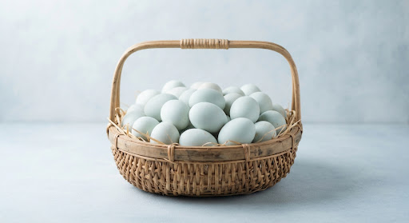
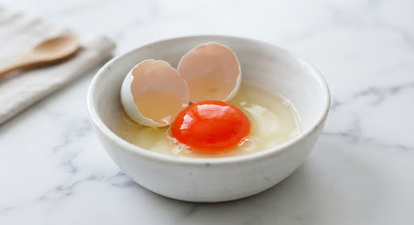
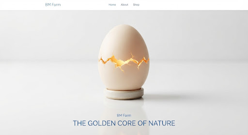
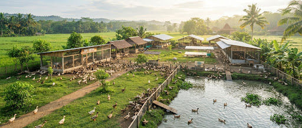
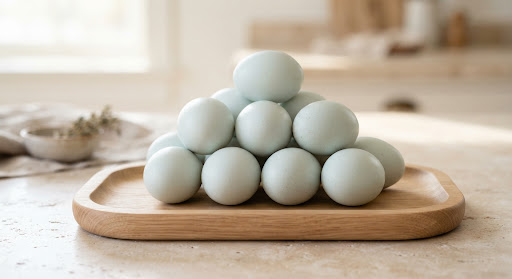
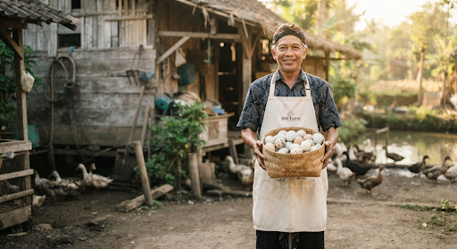
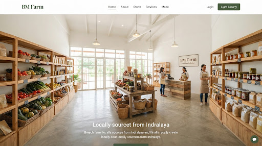
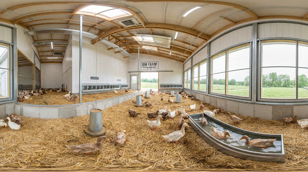
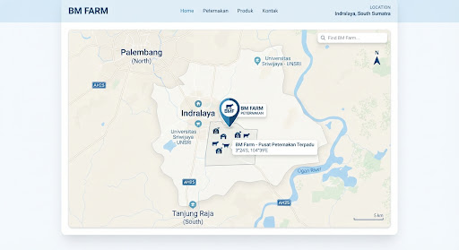

Telur Bebek Omega Segar dari Peternakan Indralaya
Kualitas nutrisi premium dengan kandungan Omega-3 yang tinggi untuk kesehatan keluarga Anda. Langsung dari tangan peternak lokal yang berdedikasi.
5000+
Ekor Bebek
2018
Tahun Berdiri
10k+
Pelanggan Puas

Kualitas Terjamin
Grade A+ Premium

Apa itu Telur Bebek Omega?
Telur Bebek Omega kami bukan sekadar telur biasa. Melalui proses pemberian pakan khusus yang kaya akan asam lemak esensial, bebek kami menghasilkan telur dengan kandungan Omega-3, EPA, dan DHA yang jauh lebih tinggi dibandingkan telur standar.
Warna kuning telurnya yang lebih pekat (jingga kemerahan) menjadi bukti nyata tingginya kadar nutrisi dan antioksidan di dalamnya. Sangat baik untuk perkembangan otak anak, kesehatan jantung dewasa, serta menjaga imunitas tubuh.
- check_circle Pakan Organik Terstandarisasi
- check_circle Tanpa Hormon Pertumbuhan
- check_circle Segar Setiap Hari (H+1 Panen)
Keunggulan BM Farm
Komitmen kami dalam menghadirkan kualitas terbaik di setiap butir.
Tinggi Omega-3
Membantu menyehatkan fungsi jantung dan kognitif.
Protein Lebih Tinggi
Kandungan protein padat untuk pertumbuhan otot optimal.

Kuning Telur Pekat
Warna jingga tua yang kaya akan Beta-Karoten alami.
Peternakan Terpercaya
Dikelola dengan standar higienis di wilayah Indralaya.
Galeri Peternakan
Melihat lebih dekat lingkungan BM Farm.




360° Area Jualan

360° Kandang & Area Pakan
Dapatkan Telur Omega Segar Hari Ini
Kami melayani pembelian retail dan grosir untuk restoran, hotel, maupun kebutuhan rumah tangga di seluruh area Indralaya dan sekitarnya.
